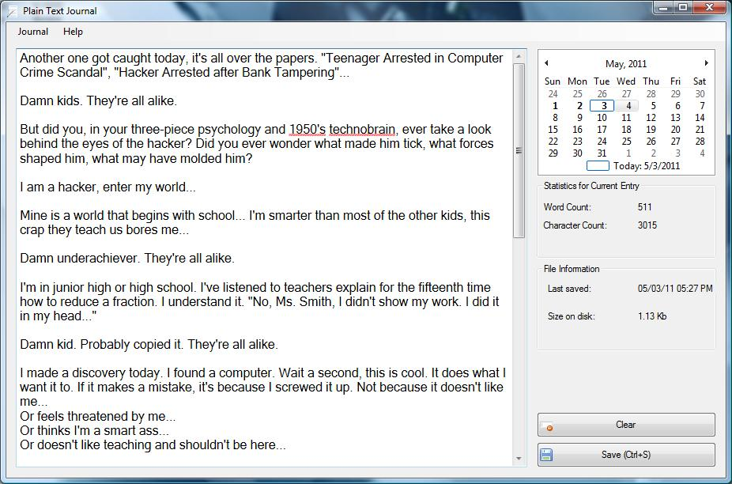

Plain Text Journal is a personal journaling tool. It is intended to be used as a very simple, no-frills daily diary. It was built with two things in mind:
A journal tool should be simple, and easy to use. Writing a daily journal is all about the content. It's not about tagging, categorizing, cross linking and etc.. That's what blogs, wikis and note taking tools are for. Plain Text Journal is different. It's just you and your writing. The interface supports the bare minimum features.
Personal journals are long term affairs. Most people keep them for many years. It makes no sense to trap all that content in some database, or proprietary file format. Plain Text Journal saves your entries in plain text. It is a tool that helps you to navigate, organize and create new entries, but at the end of the day it's all just text. You can go back and edit your entries with any text editor at any time.
Here is a sample screenshot:
Plain Text Journal was written in C#. You will need Microsoft .NET Framework 3.5 or better to run it. The project was created using Microsoft Visual C# 2008 Express, and the repository includes all the project files for your convenience. You should be able to open and compile the project in any version of Microsoft Visual Studio.
There are two options for obtaining Plain Text Journal binaries:
Current version: 0.1.0.39476
This program is free software; you can redistribute it and/or modify it under the terms of the GNU General Public License as published by the Free Software Foundation; either version 3 of the License, or (at your option) any later version. This program is distributed in the hope that it will be useful, but WITHOUT ANY WARRANTY; without even the implied warranty of MERCHANTABILITY or FITNESS FOR A PARTICULAR PURPOSE. See the GNU General Public License for more details.
Copyright (c) 2011 Lukasz Grzegorz Maciak (maciak.org)
Lukasz Grzegorz Maciak (luke at maciak dot net)
You can download this project in either zip or tar formats.
You can also clone the project with Git by running:
$ git clone git://github.com/maciakl/Plain-Text-Journal